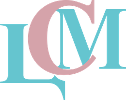
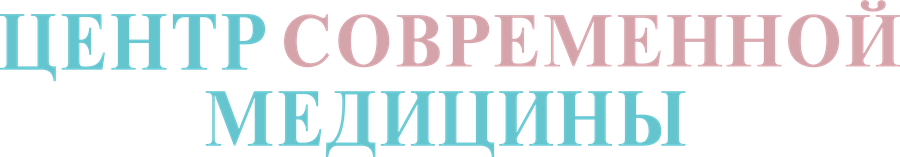

Первый визит
Консультация и массаж шеи — 500 ₽
Знакомство со специалистом и массаж шейно-воротниковой зоны по специальной цене.


Медицинский, классический и лимфодренажный массаж, массаж для беременных, стоун-терапия и гуаша в центре Красноярска. Проводит медицинская сестра по массажу — с учётом ваших жалоб, назначений врача и противопоказаний.
Если сомневаетесь, какой вид подойдёт, начните с первого визита за 500 ₽: специалист расспросит о самочувствии и предложит вариант.
Массаж отдельных зон — шейно-воротниковой, спины, рук и ног — как часть лечения, которое назначил невролог или травматолог-ортопед. Может уменьшить мышечное напряжение и скованность; курс и зоны лучше согласовать с врачом.
Общий массаж тела в спокойном темпе: поглаживание, растирание, разминание. Хороший вариант, если хочется снять усталость после рабочей недели и расслабиться.
Мягкая ритмичная техника по ходу лимфотока. Её выбирают при ощущении тяжести и отёчности в ногах, в том числе после долгого сидения. Есть вариант общего медицинского массажа с лимфодренажным эффектом.
Бережный массаж в удобном положении, без воздействия на живот. Проводится только при отсутствии противопоказаний — допустимость массажа и срок беременности обязательно согласуйте с вашим акушером-гинекологом.
Массаж с использованием нагретых гладких камней. Тепло помогает расслабиться и сделать процедуру особенно приятной.
Техника с использованием специального скребка: специалист работает по коже лица или тела плавными движениями. Подходит тем, кто хочет попробовать необычный формат ухода.
Короткий точечный массаж ушных раковин, кистей или стоп — так эту процедуру называют в клинике. Его можно взять отдельно или добавить к основному массажу.
Также в прайсе: массаж лица (в том числе скульптурный и с мёдом), массаж головы, спортивный, «бразильский», креольский массаж бамбуковыми палочками, перкуссионный и точечный массаж. Все цены →
Сроки и условия акций уточняйте у администратора. Можно ли совместить несколько акций — тоже уточните при записи. Все акции центра →
Знакомство со специалистом и массаж шейно-воротниковой зоны по специальной цене.
При покупке 9 процедур массажа десятая — бесплатно.
К массажу лица — массаж кистей.
Иммуностимулирующий массаж кистей в подарокГлубокая проработка спины и массаж стоп в завершение.
Иммуностимулирующий массаж стоп в подарокМассаж спины и короткий перкуссионный массаж рук или ног на выбор.
Перкуссионный точечный массаж рук или ног, 15 минВ субботу к массажу любой зоны — 15 минут массажа лица.
Массаж лица, 15 минПокажем упражнения, которые можно выполнять дома между сеансами и после курса. Перед началом курса лечебного массажа рекомендуем консультацию врача.
Массаж не заменяет лечение. При боли, онемении или ограничении движений сначала покажитесь врачу.
После сидячей работы, долгой дороги, за компьютером. Медицинский массаж зоны может помочь расслабить мышцы — по согласованию с неврологом, если есть боль.
НеврологияКлассический массаж, стоун-терапия и массаж лица — когда хочется просто отдохнуть и восстановить силы в выходной.
Акции выходного дняКурсовой массаж как часть реабилитации — после консультации травматолога-ортопеда и в согласованные им сроки.
ТравматологияПеред первым сеансом специалист уточнит самочувствие и хронические заболевания. Если есть сомнения — посоветуем сначала показаться врачу: терапевту или профильному специалисту.
Приходите за 5–10 минут до начала, в удобной одежде.
Специалист спрашивает о самочувствии, жалобах, хронических заболеваниях и назначениях врача, уточняет противопоказания.
Сила давления — комфортная для вас: скажите, если нужно мягче или интенсивнее. Длительность — по выбранной программе.
После сеанса — несколько минут отдыха. Если нужен курс, специалист предложит частоту и число процедур.
Массаж проводит медицинская сестра по массажу. Приём — по будням вечером и в субботу, удобно после работы.
Если массаж назначен как часть лечения, возьмите на первый сеанс рекомендации врача. Все специалисты →
Цены совпадают с прайсом, утверждённым в клинике. Длительность указана в названии услуги.
Не нашли ответ? Позвоните: +7 (913) 558-87-11
Медицинский массаж выполняется на определённой зоне с учётом жалоб и назначений врача и обычно проводится курсом. Классический общий массаж больше направлен на расслабление и общее самочувствие.
Для расслабляющего массажа — обычно нет, специалист уточнит противопоказания перед сеансом. Если есть боль в спине или суставах, онемение, хронические заболевания или беременность, сначала обратитесь к врачу: неврологу, травматологу-ортопеду или акушеру-гинекологу.
Специальный массаж для беременных проводится только при отсутствии противопоказаний и с согласия наблюдающего акушера-гинеколога — он же скажет, с какого срока это допустимо в вашей ситуации.
Зависит от цели. Расслабляющий массаж можно делать разово. Медицинский массаж обычно назначают курсом — число сеансов и частоту определяет врач или специалист после первого визита. При курсе от 9 процедур действует акция «10-й массаж в подарок».
Назовите акцию при записи по телефону или укажите её в комментарии к заявке. Сроки и условия уточняйте у администратора.
Например: УЗИ, SVF, гинеколог, ЭКГ, массаж